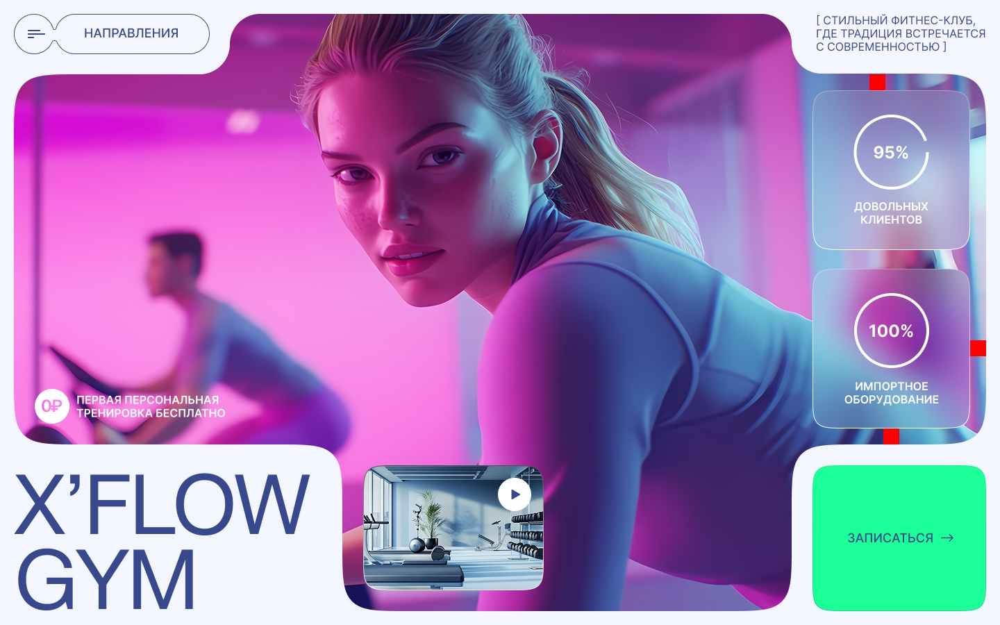
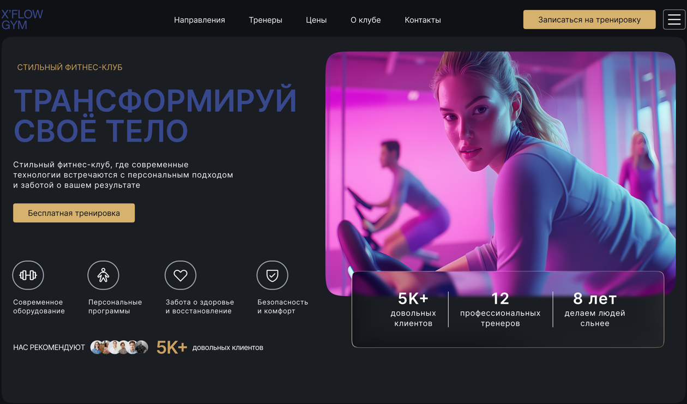
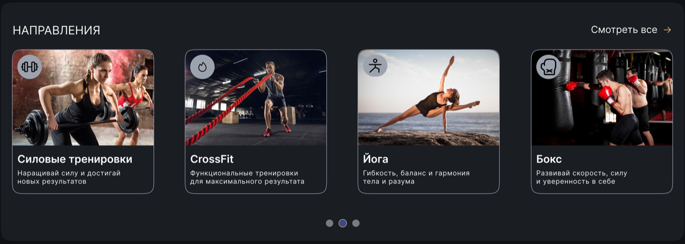
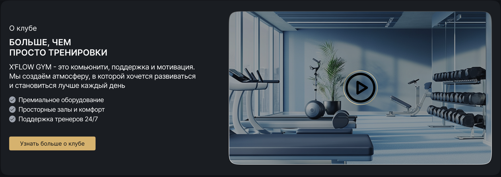
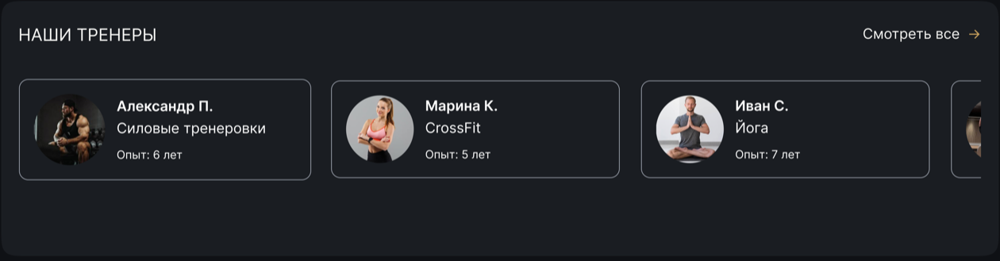
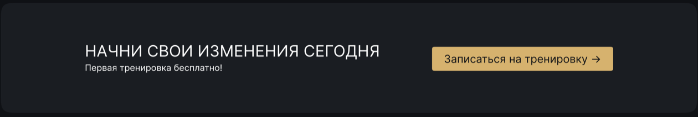

11 / ВЕБ · ФИТНЕС · UX/UI-РЕДИЗАЙН
X’FLOW
GYM.
Редизайн лендинга фитнес-клуба для тех, кто выбирает, где и с кем заниматься. От знакомства с клубом до решения записаться на первую тренировку.
- Моя роль
- UX-аудит, структура и веб-дизайн
- Материалы
- Сценарий записи и макет для десктопа

01 / Задача
От эффектного входа к выбору тренировки
Исходный экран передавал характер клуба через яркое фото, крупный логотип и предложение бесплатной тренировки. Кнопка «Записаться» уже была на виду. При этом направления были обозначены одним компактным пунктом, а тренеры и условия первого визита на экране не раскрывались.
Цель редизайна — дать человеку достаточно оснований выбрать занятие и при этом оставить короткий путь для тех, кто уже готов записаться.
02 / Сценарий
Четыре решения до первого визита
UX-аудит исходного экрана показал, какие вопросы остаются после знакомства с клубом. В структуре лендинга каждому вопросу отведено своё место.
Что предлагает клуб?
Первый экран сразу показывает предложение бесплатной тренировки. Из верхней навигации можно перейти к разделам клуба.
Какое занятие мне подходит?
Силовые тренировки, CrossFit, йога и бокс показаны в карточках с фото и кратким описанием формата.
Кто и где будет тренировать?
Карточки тренеров показывают специализацию и опыт, превью зала даёт представление о пространстве, а отзывы дополняют картину.
Как начать?
Запись доступна с первого экрана и в конце страницы, когда человек уже изучил направления, зал и тренеров.
03 / До и после
Одна фотография, две иерархии
Фотография осталась центром композиции. Название предложения и действие вынесены в отдельную колонку, пункты меню раскрыты, а основные кнопки получили общий цвет.
Исходный первый экран


Мозаика вокруг фото. Запись, видео и показатели клуба распределены между отдельными плитками.
Первый экран после редизайна


Предложение и кнопка собраны слева, фотография и показатели клуба — справа.
04 / Визуальная система
Энергия в кадре, порядок в интерфейсе
Неоновый свет создаёт атмосферу клуба, графитовые панели отделяют разделы, а золотые кнопки выделяют запись среди остальных действий. Фотографии направлений помогают различать занятия ещё до чтения описаний.


Направления
Одинаковый формат карточек помогает быстро сравнить разные виды нагрузки.


Пространство клуба
Фотография зала показывает оборудование и характер пространства, в которое предстоит прийти.


Карточки тренеров
Имя, специализация и опыт собраны в одном месте, чтобы сопоставить тренера с выбранным занятием.


Приглашение на первую тренировку
В конце страницы повторено условие пробного визита рядом с кнопкой записи.
05 / Результат
Страница ведёт к решению записаться
В итоговом макет для десктопае появились самостоятельные блоки направлений, клуба, тренеров и отзывов. Запись видна уже в начале и повторяется после знакомства с клубом.
Что проверить дальше
- Находит ли новый посетитель подходящее направление и может ли объяснить, что входит в бесплатную тренировку.
- Куда ведёт пункт «Цены». В макете он есть в меню, поэтому для рабочего сайта нужен раздел или отдельная страница с условиями.
- Удобно ли пройти запись на телефоне и понятно ли после отправки, когда ждать подтверждение.
Что помогает решиться на первый визит
Кнопка записи работает в контексте выбора. К моменту нажатия человек уже может знать, какой формат ему подходит, кто ведёт занятие и чего ожидать от клуба.